写到了 Chapter3 的 3NF，应该开始写4NF。A theory : “dependencies” will be talked first
A standard for a good Relational Scheme Design will eliminate problems
Boyce-Codd Normal Form
Third Normal Form
Second Normal Form
First Normal Form
Properties of a decomposition
Use chase method to find out whether the decomposition is lossy join.
3NF Synthesis Algorithm
Origin PPTs:
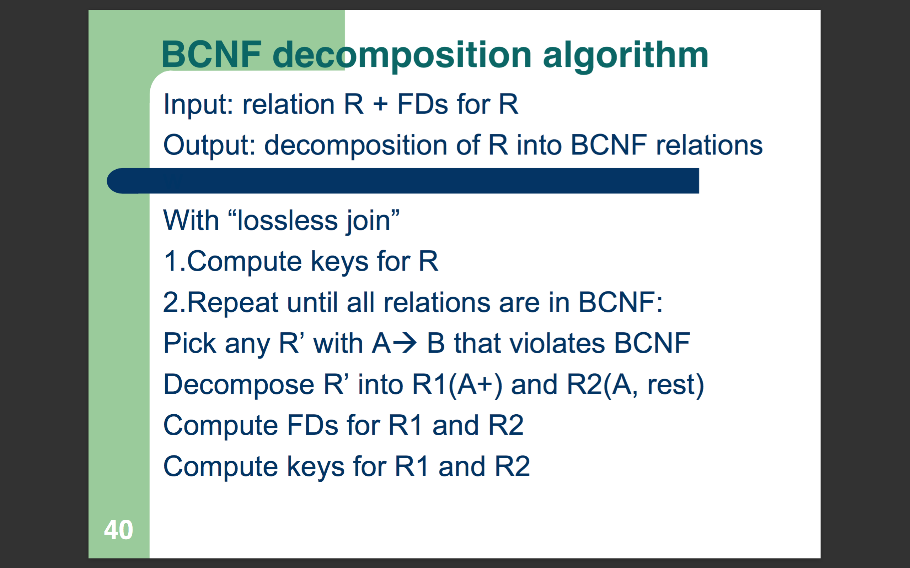
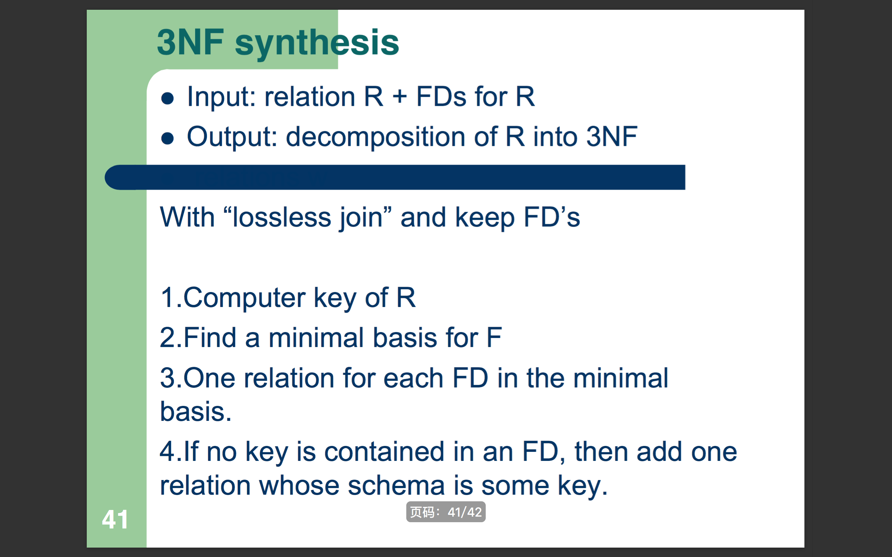
CREATE TABLE <name> (
<list of elements>
);
DROP TABLE <name>;ALTER TABLE <name> ADD <new attribute>;
ALTER TABLE <name> DROP <attribute>;CREATE TABLE <name> (
<name> <type>,
<name> <type> UNIQUE,
<name> <type> PRIMARY KEY,
<name> <type> NOT NULL,
<name> <type> DEFAULT value,
PRIMARY KEY (<list of name>)
);| Type | Discribe |
|---|---|
| INT / INTEGER | |
| REAL / FLOAT | |
| CHAR(n) | fixed-length of n |
| VARCHAR(n) | variable-length up to n |
| BIT(n) | bit string of length n |
| BOOLEAN | true, false or unknown |
| DATE | 'yyyy-mm-dd' |
| TIME | 'hh:mm:ss' or 'hh:mm:ss.d'(percentage) |
| Operate | Format | Example on Set | Example on Bag |
|---|---|---|---|
| Selection | \(R1:=\sigma_C(R2)\) | 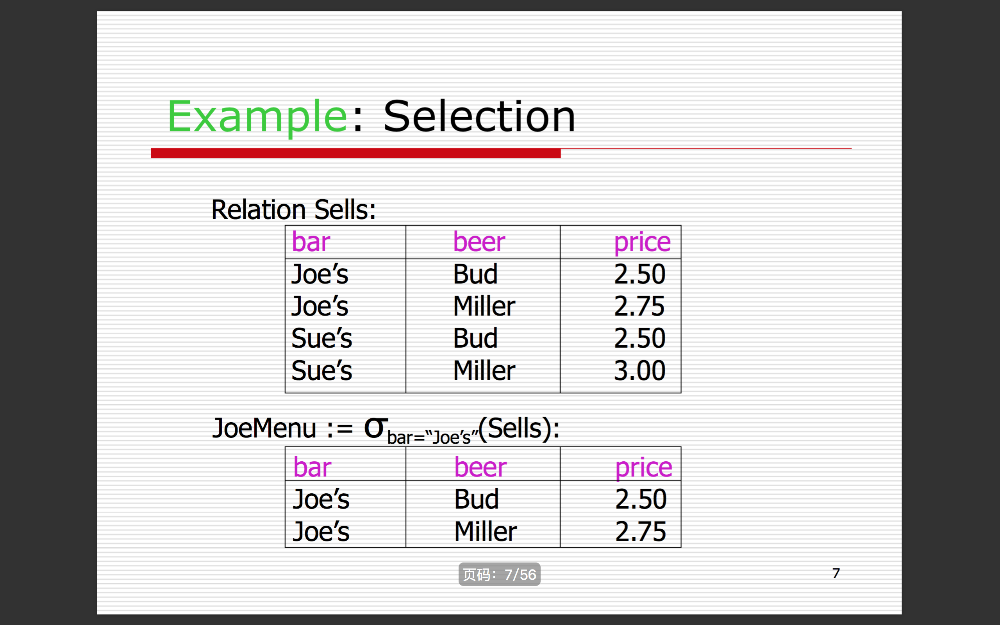 | 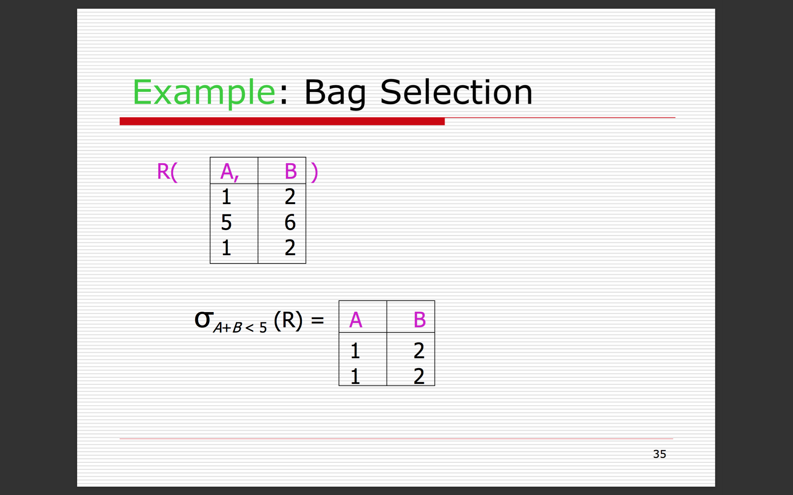 |
| Projection | \(R1:=\pi_L(R2)\) | 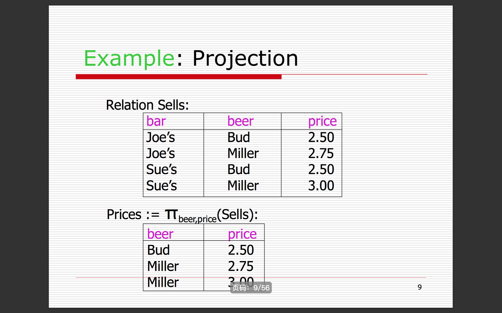 | 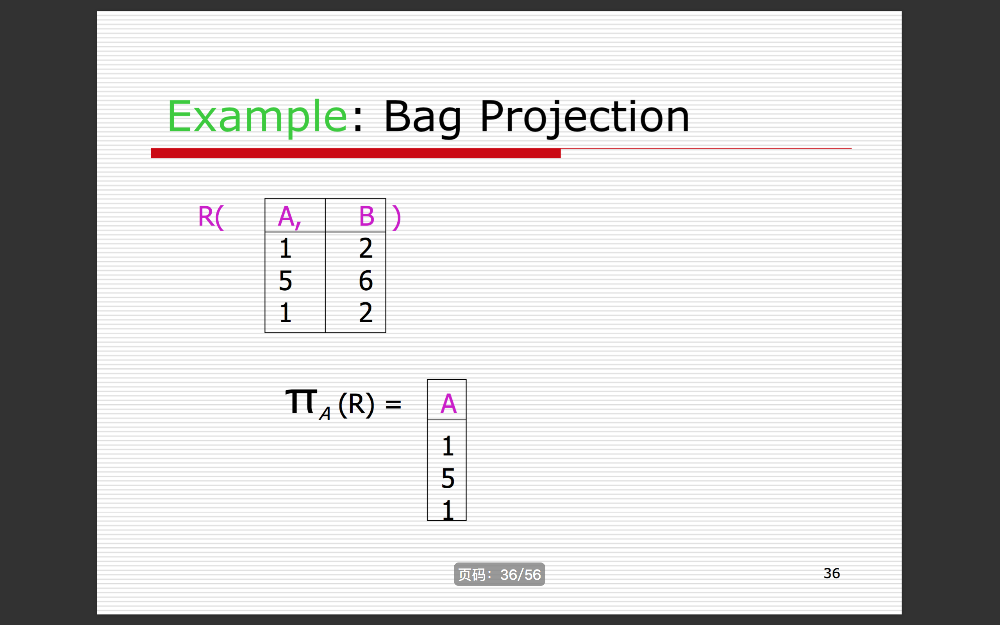 |
| Extended Projection | \(R1:=\pi_L(R2)\) | |
|
| Product | \(R3:=R1\times R2\) | 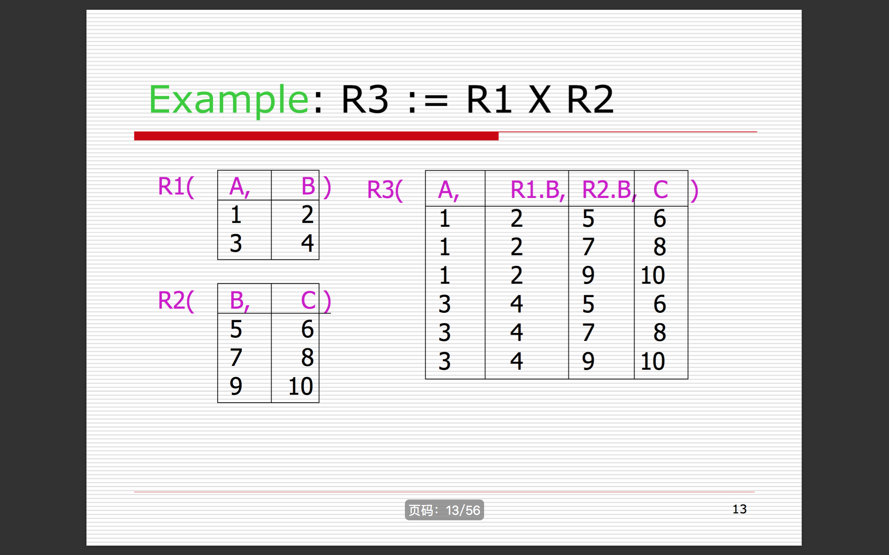 | 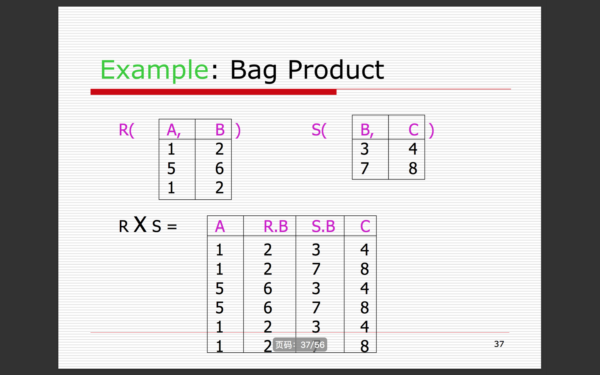 |
| Theta-Join | \(R3:=R1\Join_C R2\) | 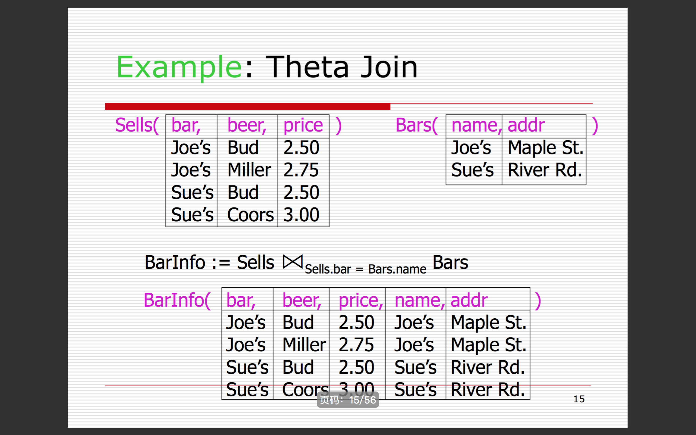 | 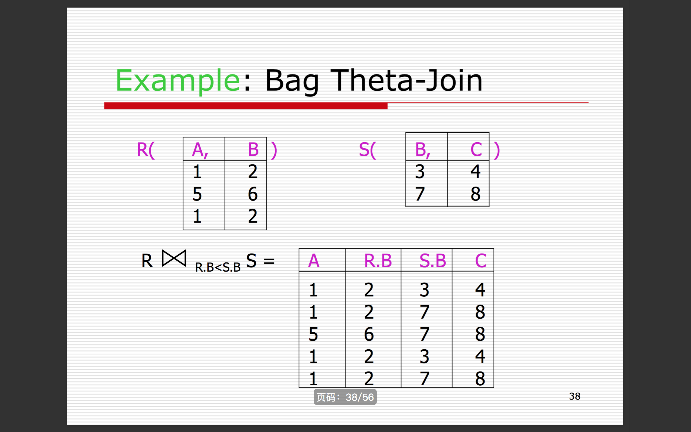 |
| Natural Join | \(R3:=R1\Join R2\) | 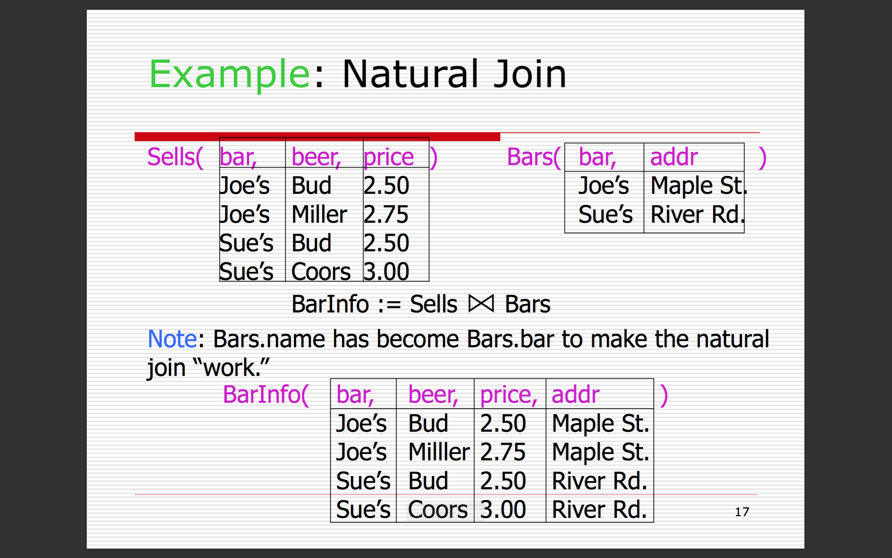 | |
| Renaming | \(R1:=\rho_{R1(A_1,...,A_n)}(R2)\) | 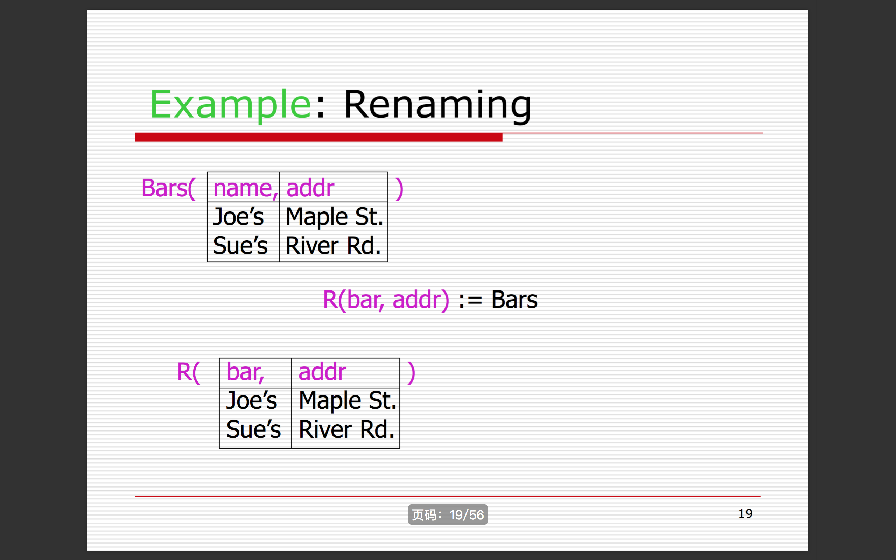 |
A bag (or multiset ) is like a set, but an element may appear more than once.
Why Bags?